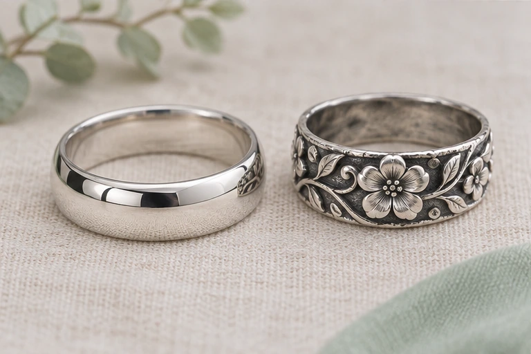

Ilustracja poglądowa wygenerowana AI; nie dokumentuje konkretnego produktu ani aktualnej oferty punktu.
Rodowanie srebra wykonuje się przede wszystkim po to, aby nadać biżuterii jasny, chłodny połysk i ograniczyć ciemnienie jej powierzchni. Cienka warstwa rodu oddziela srebrny stop od otoczenia. Dzięki temu ozdoba może dłużej zachować równomierny wygląd, ale nadal wymaga delikatnego traktowania. Rodowanie nie jest trwałym zabezpieczeniem przed każdym zarysowaniem.
Na czym polega rodowanie srebra?
Rod to metal szlachetny z grupy platynowców. W jubilerstwie nakłada się go zwykle metodą galwaniczną: po odpowiednim przygotowaniu i oczyszczeniu wyrobu na jego powierzchni osadza się bardzo cienka warstwa metalu. Przygotowanie może obejmować polerowanie, dlatego przed odnowieniem delikatnego wzoru lub grawerunku potrzebna jest ocena jubilera.
Pod warstwą rodu pozostaje pierwotny materiał, na przykład srebro próby 925. Rodowanie nie zamienia srebra w platynę ani białe złoto i nie zwiększa próby srebra. Sama informacja o powłoce nie mówi też, z czego wykonano cały przedmiot — rodować można różne podłoża.
Po co rodować srebrną biżuterię?
Najczęstszy cel to uzyskanie jasnej, lśniącej i jednolitej powierzchni. Rodowanie stosuje się między innymi w pierścionkach, kolczykach, naszyjnikach i bransoletkach. Jasne wykończenie może podkreślać blask bezbarwnych kamieni, choć efekt zależy również od projektu i jakości wykonania.
Druga korzyść to ograniczenie kontaktu srebra ze związkami obecnymi w otoczeniu. Typowe ciemnienie srebra wiąże się zwłaszcza z reakcjami ze związkami siarki. Ciągła, nieuszkodzona powłoka spowalnia ten proces na pokrytej powierzchni. Nie oznacza to jednak, że rodowana biżuteria nigdy nie straci połysku: może się zabrudzić, porysować, a jej powłoka stopniowo się zużywa.
Czy rodowanie chroni przed zarysowaniami?
Rod jest twardy, lecz jego warstwa na biżuterii jest bardzo cienka. Nie stanowi pancerza, który chroni srebrny przedmiot przed uderzeniem, odkształceniem czy głęboką rysą. Szczególnie intensywnie zużywają się spody pierścionków, krawędzie i miejsca styku z innymi ozdobami. Dlatego podczas prac domowych i ćwiczeń warto biżuterię zdejmować.
Jak długo utrzymuje się powłoka rodu?
Nie ma jednego terminu właściwego dla wszystkich wyrobów. Znaczenie mają grubość i jakość powłoki, przygotowanie podłoża, częstotliwość noszenia oraz kontakt z detergentami i powierzchniami powodującymi tarcie. Kolczyki mogą zużywać się inaczej niż pierścionek noszony codziennie. Bez znajomości konkretnego wyrobu nie warto obiecywać określonej liczby miesięcy lub lat.
O zużyciu mogą świadczyć nierówny połysk, różnice odcienia lub ciemnienie odsłoniętego srebra. Podobny efekt dają zabrudzenia, dlatego najpierw warto poprosić jubilera o ocenę. Ponowne rodowanie bywa możliwe, ale zależy od konstrukcji, stanu wyrobu i rodzaju osadzonych kamieni.
Jak czyścić srebro rodowane?
Zacznij od zaleceń producenta. Do codziennego przetarcia używaj miękkiej, czystej ściereczki bez preparatu ściernego. Jeśli pozwala na to konstrukcja i rodzaj kamieni, można zastosować krótkie mycie w letniej wodzie z niewielką ilością łagodnego środka, następnie opłukać i delikatnie osuszyć. Perły, kamienie porowate i elementy klejone mogą wymagać innej pielęgnacji.
Unikaj pasty do zębów, sody, szorstkich szczoteczek oraz intensywnego polerowania. Ściereczki nasączone preparatem do polerowania srebra i kąpiele do usuwania nalotu nie są automatycznie odpowiednie dla rodowanej powierzchni. Zdejmuj ozdoby przed kontaktem z chemią gospodarczą i wodą basenową, a perfumy i kosmetyki nakładaj przed założeniem biżuterii. Przechowuj ją osobno, aby elementy nie ocierały się o siebie.
Czy srebro rodowane jest bezpieczne dla alergików?
Powłoka może ograniczać bezpośredni kontakt skóry z podłożem, ale nie jest gwarancją braku reakcji alergicznej. Liczy się skład całego wyrobu, także ewentualnych warstw pośrednich i zapięć. Po zużyciu powłoki kontakt z podłożem może się zwiększyć. Przy znanym uczuleniu poproś sprzedawcę o informacje o składzie, zamiast polegać wyłącznie na określeniu „rodowane”.
Czy warto odnawiać rodowanie przed sprzedażą?
Jeżeli sprzedajesz biżuterię na kruszec, koszt odnowienia powierzchni zwykle nie jest potrzebny do ustalenia zawartości srebra. Wycena opiera się przede wszystkim na sprawdzeniu stopu i masy, z uwzględnieniem części niesrebrnych. Cienka warstwa rodu nie oznacza, że cały przedmiot zostanie rozliczony według ceny rodu. Inaczej może wyglądać przygotowanie biżuterii do odsprzedaży jako gotowej ozdoby — wtedy stan i wygląd mają większe znaczenie.
Przed wizytą w punkcie w Gorzowie nie usuwaj samodzielnie powłoki. Skorzystaj z orientacyjnej wyceny srebra lub zapytaj o ocenę biżuterii. Jeśli porównujesz różne wykończenia, przeczytaj również czym różni się srebro rodowane od oksydowanego.